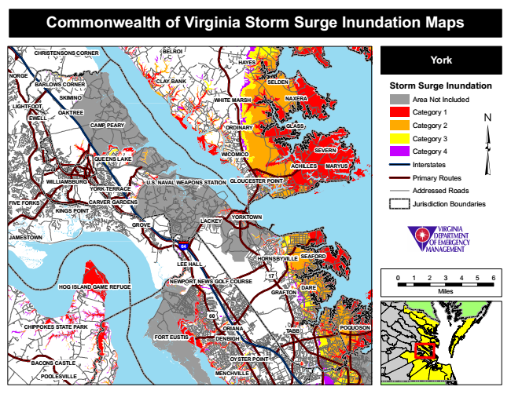

Commonwealth of Virginia Storm Surge Inundation Maps
CHRISTENSONS CORNER
BELROI
HAYES
York
NORGE
BARLOWS CORNER
CLAY BANK
SELDEN
Storm Surge Inundation
SKIMINO
WHITE MARSH
NAXERA
Area Not Included LIGHTFOOT
OAKTREE EWELL
Category 1
CAMP PEARY
ORDINARY
GLASS
Category 2
Category 3
QUEENS LAKE
WICOMICO
SEVERN
Category 4
ACHILLES
MARYUS
Interstates
WILLIAMSBURG
U.S. NAVAL WEAPONS STATION
GLOUCESTER POINT
Primary Routes
YORK TERRACE
Addressed Roads
FIVE FORKS
CARVER GARDENS
Jurisdiction Boundaries KINGS POINT
GROVE
LACKEY
JAMESTOWN
64
SEAFORD LEE HALL
17
0 1 2 3 4 5 6
GRAFTON
Miles
60
CHIPPOKES STATE PARK
ORIANA
POQUOSON
FORT EUSTIS
DENBIGH
OYSTER POINT
POOLESVILLE
MENCHVILLE
HORNSBYVILLE
BACONS CASTLE
YORKTOWN
NEWPORT NEWS GOLF COURSE HOG ISLAND GAME REFUGE
DARE
TABB